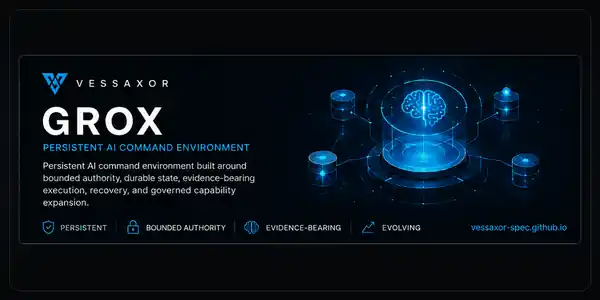

TEO 01A
CONTROL PLANE
The Ever-Evolving
Orchestration
Responsibility before routing. Authority before execution. Verification before completion.
Living Systems Lab
VESSAXOR / SYSTEMS PORTFOLIO
Persistent AI systems, governed orchestration, and autonomous digital intelligence built around authority, evidence, continuity, and replaceable models.
Models are temporary.
Systems endure.
02 / SYSTEMS
TEO 01A
CONTROL PLANE
Responsibility before routing. Authority before execution. Verification before completion.
GroX 01B
PERSISTENT VESSEL
A persistent AI command environment where authority stays explicit and execution leaves evidence.

03 / SYSTEM STATE
Generated from an allowlisted public state file and current GitHub Releases. The build fails when curated state exceeds its freshness window.
04 / CURRENT WORK
TEO
Loading current public focus…
GroX
Loading current public focus…
RESEARCH
Loading current public focus…
05 / PRINCIPLES
Intelligence should be replaceable without making the surrounding system disposable.
Capability and permission remain separate questions.
Plausibility matters. Observable proof matters more.
Better systems can become more capable without becoming less governed.
06 / SOURCE